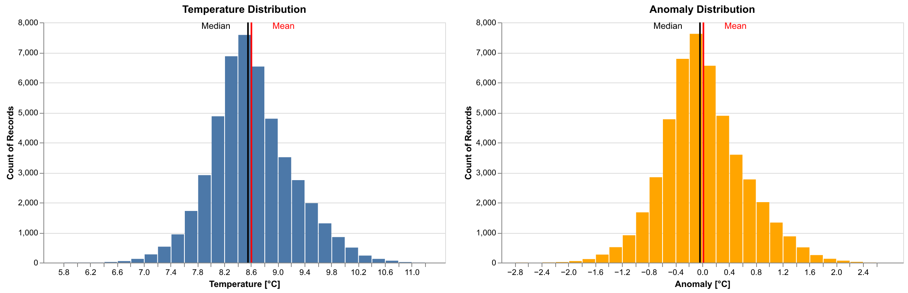
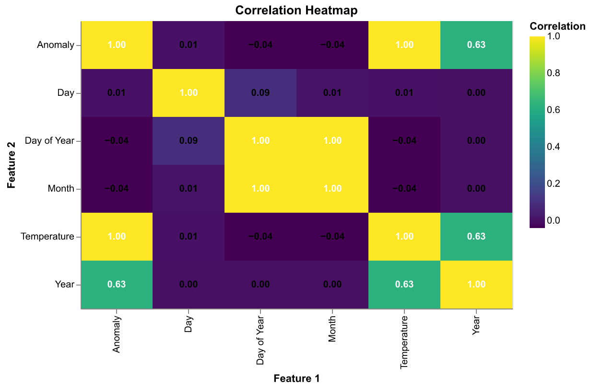
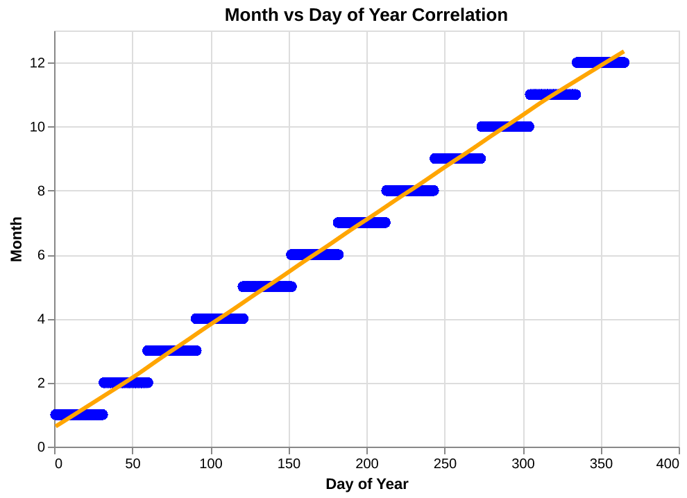
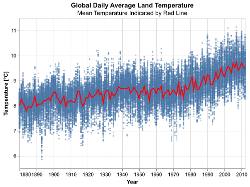
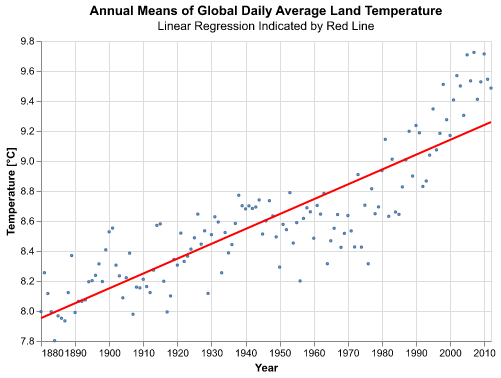
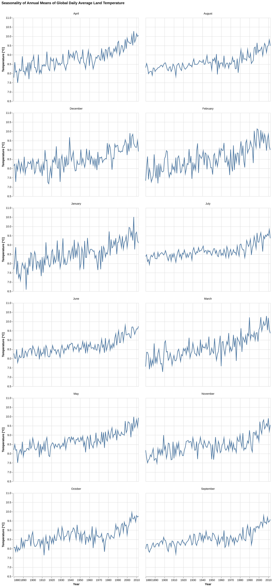
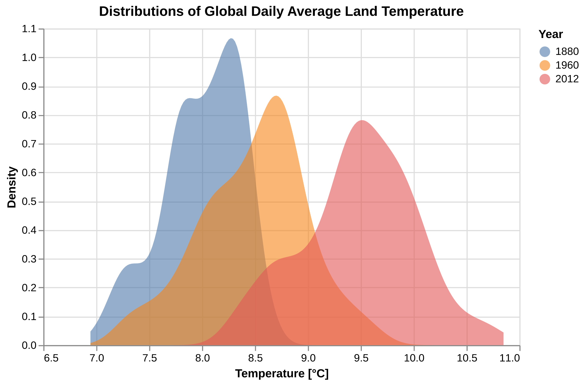
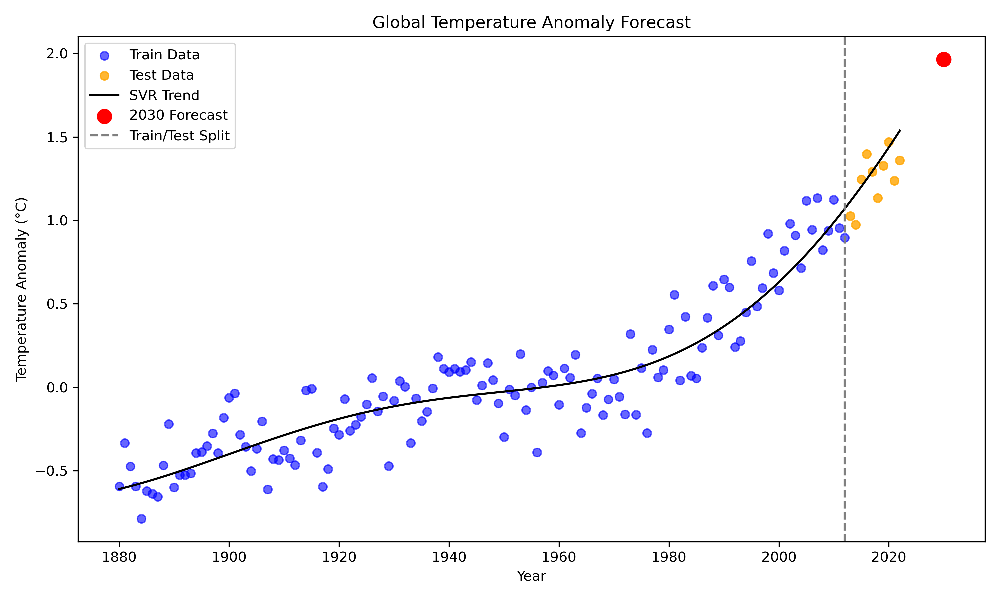

df = DailyTempSchema.validate(df)
>>> ✓ Data validation passedPredicting Daily Land Average Temperature
Summary
This project analyzes global daily average land-surface temperature measurements collected by Berkeley Earth from 1880–2022. In the following analysis, dataset is cleaned and preprocessed, explored through EDA, and modeled to predict future temperature trends using this historical data. After evaluating three regression approaches, Linear Regression, Random Forest, and Support Vector Regression (SVR),the SVR model performed best and was used to forecast the land average temperature for the year 2030.
Introduction
Understanding long-term changes in global land temperature is critical for studying climate change. Daily temperature anomaly data collected over more than 140 years provide an opportunity to model how temperatures have shifted, identify long-term patterns, and forecast future warming.
In this report, we talk both about the actual temperature as well as the temperature anomaly. Temperature anomaly refers to deviation from a baseline climatological temperature. In this study, the baseline is 8.59°C, representing the January 1951–December 1980 global land-average temperature.
In this project, we will be answering the research question:
What do we expect the global land-average temperature of the Earth to be in 2030, based on the trends from the years 1880 to 2012.
Dataset
The data set for this project was published by Berkeley Earth under a Creative Commons BY-NC 4.0 International license, free for non-commercial use, and accessed by our team compliant with the conditions in this license on November 18, 2025. The raw data can be found at the Berkeley Earth Temperature site (Berkeley Earth 2022c).
The data set contains 5 columns with time series information, and one column representing the temperature difference relative to the average temperature between January 1951 and December 1980, which they calculated as 8.59 +/- 0.05 (Berkeley Earth 2022c). For our analysis, we preprocessed the data to get the raw temperature readings back by adding 8.59 to each entry in the Anomaly column. All temperatures are in Celsius.
Methods and Results
The Python programming language (Van Rossum and Drake 2009) and the following Python packages were used to perform the analysis: pandas (McKinney 2010), altair (VanderPlas 2018), click (Team 2020), matplotlib (Hunter 2007), numpy (Harris et al. 2020), scikit-learn (Pedregosa et al. 2011), pandera (Bantilan et al. 2020), as well as Quarto (Allaire et al. 2022).
Pandera Schema for Daily Temperature Data Validation
The Pandera schema applied to the input data defines the expected structure and quality checks for the daily temperature dataset. It enforces correct column names, validates data types (e.g., integers for dates, floats for temperature values), ensures month names follow the expected categories, checks that values fall within reasonable ranges (year, month, day, day-of-year), and confirms that no duplicate rows are present. Unexpected columns from slipping in into the data was prevented in the schema, and compatible types when were converted when possible.
The allowable limits for outliers on the average temperature anomaly dataset relative to the average baseline (estimated Jan. 1951 - Dec. 1980 absolute temperature with reported 95% confidence bounds (Berkeley Earth 2022c)), were naturally set as the minimum and maximum measurements of the baseline itself, or in other words the minimum and maximum temperature anomalies observed. These are reasonable limits for the averaged values because you would not expect the averaged values to be anywhere near the absolute minimum and maximum measurements, and if they are these examples should be examined more carefully (raising a validation warning or viewing the validation error log). Because the baseline, temperature in Celsius and temperature anomaly all have a direct mathematical relationship, bounds can be set on the anomaly target or temperature target interchangeably by adding or subtracting the average baseline (8.59). The resulting average anomaly limits were -5.64 and 5.81, which were compared to external sources to ensure validity.
The sources (Berkeley Earth 2022b, 2022a; Hansen, Sato, and Ruedy 2012, 2022) (which use the same 1951-1980 baseline for average temperature anomaly) demonstrate that a deviation of temperature anomaly by more than 5 degrees Celsius from the baseline is extremely rare, and only observed for certain monthly averages of anomaly temperature taken across specific regions: “It was unusually warm in the Southeast U.S. and Greenland in December, the monthly average anomaly exceeding +5°C (+9°F) (Fig. 3)”(Hansen, Sato, and Ruedy 2012). Since our dataset involves average temperature anomalies globally, an anomaly this large in magnitude entering the training dataset should be flagged in the validation stage, examined further and potentially discarded.
Validating The Full DataFrame with the Defined Schema
(on the test and training datasets, see training data view here Table 1)
Data Splitting into Test and Training Data
| Year | Month | Day | Day of Year | Anomaly | Temperature | Month_Name | |
|---|---|---|---|---|---|---|---|
| 0 | 1880 | 1 | 1 | 1 | -0.692 | 7.898 | January |
| 1 | 1880 | 1 | 2 | 2 | -0.592 | 7.998 | January |
| 2 | 1880 | 1 | 3 | 3 | -0.673 | 7.917 | January |
| 3 | 1880 | 1 | 4 | 4 | -0.615 | 7.975 | January |
| 4 | 1880 | 1 | 5 | 5 | -0.681 | 7.909 | January |
| ... | ... | ... | ... | ... | ... | ... | ... |
| 48573 | 2012 | 12 | 27 | 361 | 0.134 | 8.724 | December |
| 48574 | 2012 | 12 | 28 | 362 | 0.371 | 8.961 | December |
| 48575 | 2012 | 12 | 29 | 363 | 0.532 | 9.122 | December |
| 48576 | 2012 | 12 | 30 | 364 | 0.594 | 9.184 | December |
| 48577 | 2012 | 12 | 31 | 365 | 0.631 | 9.221 | December |
48578 rows × 7 columns
Validating The Training Dataframe

We can see from the histogram plots of the target in Figure 1 (Anomaly untransformed and Temperature when transformed) that the distribution of the target is very slightly right-skewed, but is almost symmetric and fairly normally distributed. It make sense that the majority of the distribution is close to normally distributed as temperature increase has accelerated in recent years and was less prevalent the further you go back in time. We would expect the distribution to be right-skewed since the accepted hypothesis of average global temperature is that it is increasing and accelerating in recent years relative to when the collection of this data first began, and this would cause more of the density of the anomaly and temperature distributions to be to the left of the mean. A second validation schema was created to apply this skewness check to the training data and raise a warning otherwise.
Validating The Training DataFrame with the Additions to the Schema
(see training data view here Table 1)
train_df = DailyTempSchema.validate(train_df)
>>> ✓ Data validation passed
Correlation Checks Using DEEPCHECKS
The validation checks are set to raise warnings if there are unexpected anomalous correlations among features or between features and the target. The thresholds are guided by the relationships analyzed in Figure 2 and intuition of what features should be correlated with each other and with the target. Any warnings raise should be examined carefully in conjunction with Figure 2 above. Some columns have been intentionally dropped for this training dataset correlation analysis because they are known to have a correlation that makes sense and does not affect the analysis. For example (and shown clearly below in Figure 3), Month and Day of Year will be very strongly correlated as they measure the same thing but in different intervals. Additionally, Anomaly and Temperature will have a correlation of 1 since they are transformations of each other by addition of a constant. Anomaly and Temperature are expected to be correlated with the Year as this relationship is well-known and part of the reason reasonable forecasts can be made by the model in this analysis.

Exploratory Data Analysis (EDA)
The goal of this EDA is to determine what type of predictive model will be the best fit for the data. A suitable regression method is to explored, as the target (global average land temperature) is continuous. After preprocessing the dataset, no presence of null values were found requiring attention. In order to make the Month_Name (converting from Month) feature more readable during EDA, the feature was converted to an ordinal feature, with Jan as the first in the order and December as the last in the order. Monthly trends in the data were considered over the years, however overall trends were found irrespective of the month the data was collected in. A cutoff year (2012) was decided for splitting the data into test and training data sets, and EDA was carried out on only the training portion of the data set to avoid violating the golden rule and double dipping. A randomized test split was not implemented as the model is desired for predicting temperatures in the future, so test data taken from the latest measurements represents the best evaluation of the regression model. Once the dataset was split, EDA was performed with several visualization strategies, the most informative of which are presented below as Figure 4, Figure 5, Figure 6 and Figure 7. Discussions of the findings and rationale are found below as well.
| Column | Contains NA Values | Data Type | |
|---|---|---|---|
| 0 | Year | False | int64 |
| 1 | Month | False | int64 |
| 2 | Day | False | int64 |
| 3 | Day of Year | False | int64 |
| 4 | Anomaly | False | float64 |
| 5 | Temperature | False | float64 |
| 6 | Month_Name | False | object |
# of Rows (Examples of Feature Values) in the DataFrame: 48578
| Statistic | Year | Month | Day | Day of Year | Anomaly | Temperature | |
|---|---|---|---|---|---|---|---|
| 0 | count | 48578.00 | 48578.00 | 48578.00 | 48578.00 | 48578.00 | 48578.00 |
| 1 | mean | 1946.00 | 6.52 | 15.73 | 183.00 | 0.02 | 8.61 |
| 2 | std | 38.39 | 3.45 | 8.80 | 105.33 | 0.61 | 0.61 |
| 3 | min | 1880.00 | 1.00 | 1.00 | 1.00 | -2.73 | 5.86 |
| 4 | 25% | 1913.00 | 4.00 | 8.00 | 92.00 | -0.37 | 8.22 |
| 5 | 50% | 1946.00 | 7.00 | 16.00 | 183.00 | -0.03 | 8.56 |
| 6 | 75% | 1979.00 | 10.00 | 23.00 | 274.00 | 0.37 | 8.96 |
| 7 | max | 2012.00 | 12.00 | 31.00 | 365.00 | 2.55 | 11.14 |
Due to the many measurements that occur in each year (contributing to plotting noise), the mean of the temperatures for each group of measurements taken in a year were plotted in addition to the raw data points of temperature over time. A general trend of increasing temperature over time with local fluctuations can be observed below in Figure 4.

Using the mean data points by year, a linear regression model was fit to the training data to assess the viability of this approach in prediction. The linear regression fit can be seen in Figure 5 to follow the overall trend, but misses information about local fluctuations, seen by the points above and below the line. A linear model has potential to generalize for unseen year examples but may be too simple for this analysis and will not be precise in its predictions for every year. A 5-year rolling average was also explored, due to its ability to adapt the curve more effectively to local fluctuations. However, a model of this type may not extrapolate well for unseen examples to predict future temperatures.

In order to check if the global average daily temperature over time was affected by seasonal phenomena, the annual means of these temperature measurements were analyzed by each month separated. It can be seen from Figure 6 below that regardless of the season global daily average land temperature measurements are increasing non-trivially over time.

Finally, the distribution of the temperature in the training data for all measurements taken during three different years, separated by approximately 60 years, were evaluated in Figure 7 below. The last year in the training data set (2012) can be seen as significantly shifted to the right, indicating the increase in global daily average land temperature across time. Three distinct peaks in Figure 7 below reinforces the hypothesis that even when account for the variance in temperature due to local fluctuations, the overall trend of global temperature increasing over time remains.

Machine Learning Modelling
Here we convert daily climate data into yearly averages by creating a proper datetime index, resampling the anomaly values to annual means, and preparing the data for modeling by extracting the numerical year and separating it into feature (X) and target (y) arrays. Yearly averages smooth out short-term noise and make long-term climate trends easier to model, and using the year as the feature allows the machine-learning models to learn how temperature anomalies evolve over time.
We split the data into a training set (years up to 2012) and a test set (years after 2012) by creating boolean masks based on the chosen split year. It then uses those masks to separate the feature matrix and target values into training and testing subsets. By training on earlier years and testing on later years, we evaluate how well the model predicts future climate patterns rather than just fitting past data. A good model should perform well on the test set, meaning it can generalize to years it has never seen before.
Three different machine-learning models are defined which are Linear Regression, Random Forest, and a Support Vector Regressor (SVR) with scaling—so we can compare how well each one predicts yearly temperature anomalies. Each model captures patterns differently, ranging from simple linear trends to more flexible non-linear relationships.
We train each defined model on the training data, predicts anomalies for the test years, and calculates key evaluation metrics (RMSE, MAE, R²) to measure prediction accuracy. The results are stored in a table for easy comparison of model performance.
| Model | RMSE | MAE | R2 | |
|---|---|---|---|---|
| 0 | Linear Regression | 0.539126 | 0.521939 | -11.652955 |
| 1 | Random Forest | 0.350576 | 0.316120 | -4.350267 |
| 2 | SVR | 0.145067 | 0.120141 | 0.083892 |
Lower RMSE and MAE values indicate more accurate predictions, while a higher (positive) R² shows the model explains more variance in the data. From the table, SVR has the lowest errors and a positive R², making it the best model to use for forecasting.
We use the selected best model SVR, to predict the temperature anomaly for the year 2030 and then adds it to the baseline temperature to estimate the actual land-average temperature.
The predicted anomaly of ≈1.96 °C indicates that 2030 is expected to be nearly 2 °C warmer than the baseline period. Adding this to the baseline gives a land-average temperature of ≈10.55 °C, showing a continuation of the observed warming trend.

The plot shows the historical anomalies, with training data in blue and test data in orange, allowing us to visually compare the model’s predictions against unseen years. The black trend line from the SVR model captures the warming pattern, while the red point highlights the 2030 forecast, illustrating the expected continuation of the temperature rise.
The trend line closely follows historical data, test points are reasonably well-predicted, and the red forecast indicates that temperature anomalies are expected to continue rising, consistent with expert opinions on global warming.
Discussion
We found that global daily average land temperature has been steadily increasing since 1880, with a steeper increase after 1960. This trend is approximately the same across all months and seasons. The best model to capture this trend was a SVR model, which gave a predicted 2030 average land temperature of 10.55 °C, an almost 2 °C increase from the baseline period. This is an expected result and aligns well with expert opinions (Lindsey and Dahlman 2024; Intergovernmental Panel on Climate Change 2018; NASA 2024) and well-documented patterns of climate change.
The impact of these findings is that they reinforce the global scientific consensus of continued warming of the earth. In future, we would recommend creating more models with additional features to see what features most impact the model and predict warming. For example, could incorporating CO2 levels improve these predictions? Additionally, this model focuses on global averages, but we could use a more granular dataset to investigate if some parts of the world are warming faster than others.
References
Allaire, J. J., Charles Teague, Carlos Scheidegger, Yihui Xie, and Christophe Dervieux. 2022. “Quarto.” https://doi.org/10.5281/zenodo.5960048.
Bantilan, Niels et al. 2020. “Pandera: Statistical Data Validation Toolkit.” https://pandera.readthedocs.io/.
Berkeley Earth. 2022a. “Complete TMAX Summary – Global Temperature Data.” https://berkeley-earth-temperature.s3.us-west-1.amazonaws.com/Global/Complete_TMAX_summary.txt.
———. 2022b. “Complete TMIN Summary – Global Temperature Data.” https://berkeley-earth-temperature.s3.us-west-1.amazonaws.com/Global/Complete_TMIN_summary.txt.
———. 2022c. “Berkeley Earth – Global Temperature Data.” Open Data. https://berkeley-earth-temperature.s3.us-west-1.amazonaws.com/Global/Complete_TAVG_daily.txt.
Hansen, James, Makiko Sato, and Reto Ruedy. 2012. “Perception of Climate Change.” Proceedings of the National Academy of Sciences 109 (37): 14726–27. https://doi.org/10.1073/pnas.1205276109.
———. 2022. “Global Temperature in 2021.” https://www.columbia.edu/~mhs119/Temperature/Emails/Annual2021.pdf.
Harris, Charles R. et al. 2020. Array Programming with NumPy. Nature. Vol. 585. https://doi.org/10.1038/s41586-020-2649-2.
Hunter, John D. 2007. Matplotlib: A 2D Graphics Environment. Computing in Science & Engineering. Vol. 9. IEEE Computer Society. https://doi.org/10.1109/MCSE.2007.55.
Intergovernmental Panel on Climate Change. 2018. “Summary for Policymakers: Global Warming of 1.5°c.” https://www.ipcc.ch/sr15/chapter/spm/.
Lindsey, Rebecca, and LuAnn Dahlman. 2024. “Climate Change: Global Temperature.” NOAA Climate.gov. https://www.climate.gov/news-features/understanding-climate/climate-change-global-temperature.
McKinney, Wes. 2010. “Data Structures for Statistical Computing in Python.” In Proceedings of the 9th Python in Science Conference, edited by Stéfan van der Walt and Jarrod Millman, 51–56.
NASA. 2024. “Climate Change: Evidence.” https://science.nasa.gov/climate-change/evidence/.
Pedregosa, Fabian et al. 2011. Scikit-Learn: Machine Learning in Python. Journal of Machine Learning Research. Vol. 12.
Team, Pallets. 2020. Click. https://click.palletsprojects.com/.
Van Rossum, Guido, and Fred L. Drake. 2009. Python 3 Reference Manual. Scotts Valley, CA: CreateSpace.
VanderPlas, Jake. 2018. “Altair: Interactive Statistical Visualizations for Python.” Journal of Open Source Software 3 (7825, 32): 1057. https://doi.org/10.21105/joss.01057.